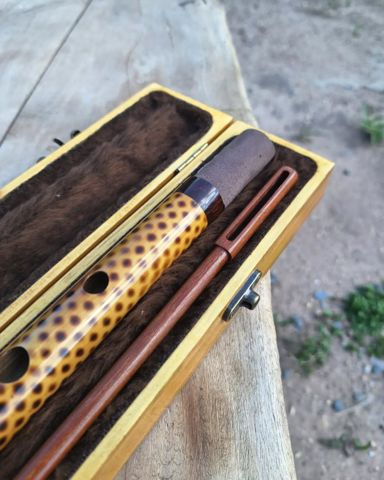

Estojo · 2024
Flauta em bambu com pirogravura, porta-lábios em Jacarandá, no tom de Sol. Estojo de madeira pinus revestido com tecido pelúcia, mais vareta de limpeza em Massaranduba com pega em Muirapiranga, e flanela de microfibra.
Perguntar sobre esta